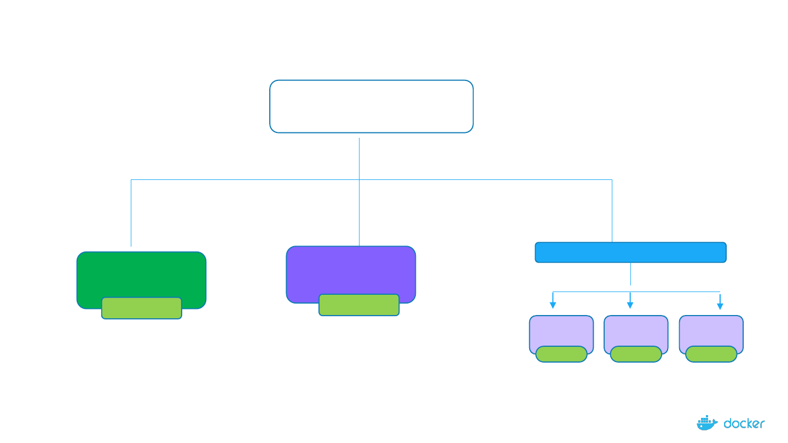
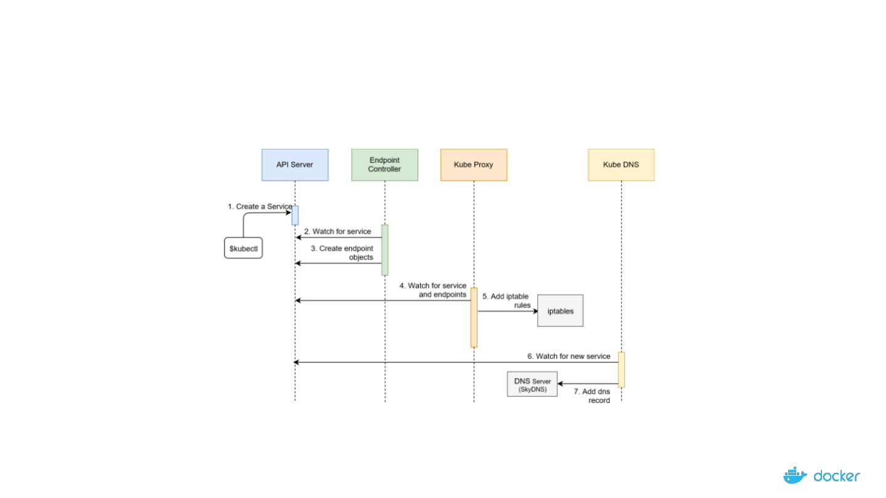
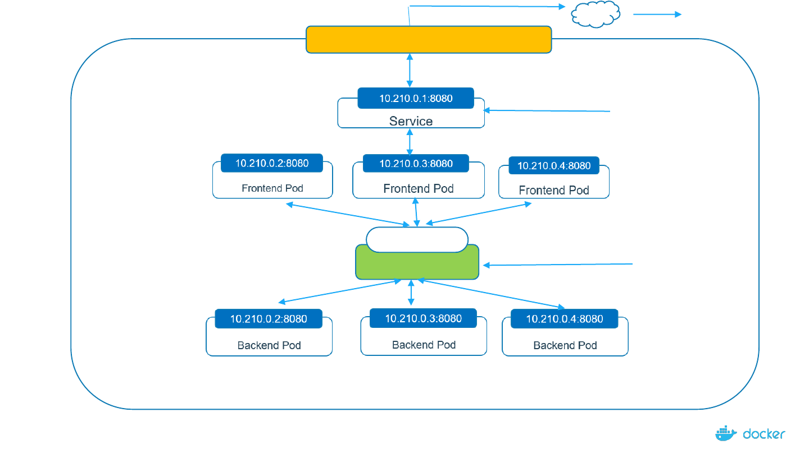

Demystifying
the Nuts & Bolts of
Kubernetes
Architecture
Services101

Services

Imagine that, you have been asked to deploy web app
How does this frontend web app exposed to outside world?
How do front end app connected to backend database?
How do we resolve Pod IP changes, when they die?

4
Agenda
• Why do we need services?
• What is Service?
• Type of Services

5
Services
• An abstraction which defines a logical set of Pods and a policy by which to access
them (sometimes this pattern is called a micro-service).
• Service acts as a layer above the pods. It is always aware of the pods that it
manages: their count, their internal IP addresses, the ports they expose and so
on.
• Service can be defined using a YAML or JSON file that contains the necessary
definitions
6
Can We Use A Kubernetes Service Without Pods?
• Access an API outside your cluster (examples: weather, stocks, currency rates).
• You have a service in another Kubernetes cluster that you need to contact.
• You need to shift some of your infrastructure components to Kubernetes. But,
since you’re still evaluating the technology, you need it to communicate with some
backend applications that are still outside the cluster.
• You have another service in another namespace that you need to reach.
Yes!

7
Services
192.168.1.1
app:db
Backend
Pod
Node
Service(backend)
Service(frontend)
Frontend
Pod
User
Frontend Service:
A Service which stays between user and
frontend pod
Backend Service:
A Service which communicate between
frontend Pod and backend end

8
Types of Services
Node-1
ClusterIP
NodePort
Node-1
LoadBalancer
Node-1 Node-1
Node-1
- Reachable within the
cluster.
- Connects Frontend
Pods to Backend Pods
- Exposing Frontend app
to external world
- Equally distribute the loads

9
A Typical Service WorkFlow

Services: ClusterIP

11
Services
• Imagine you need to deploy one full fledge app which consists of
frontend app & backend app
• How can we restrict access of backend database to only within the
kubernetes cluster?

12
192.168.1.1:31000
Services
10.210.1.1:8080
User
NodePort
ClusterIP

13
Guestbook Demo
• Frontend Web app
• Backend DB - Redis

14
References
• https://kubelabs.collabnix.com

Thank You